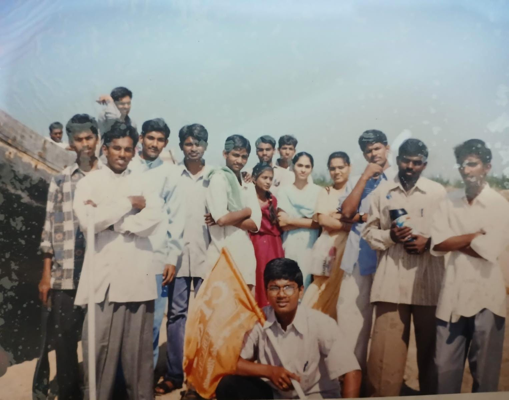
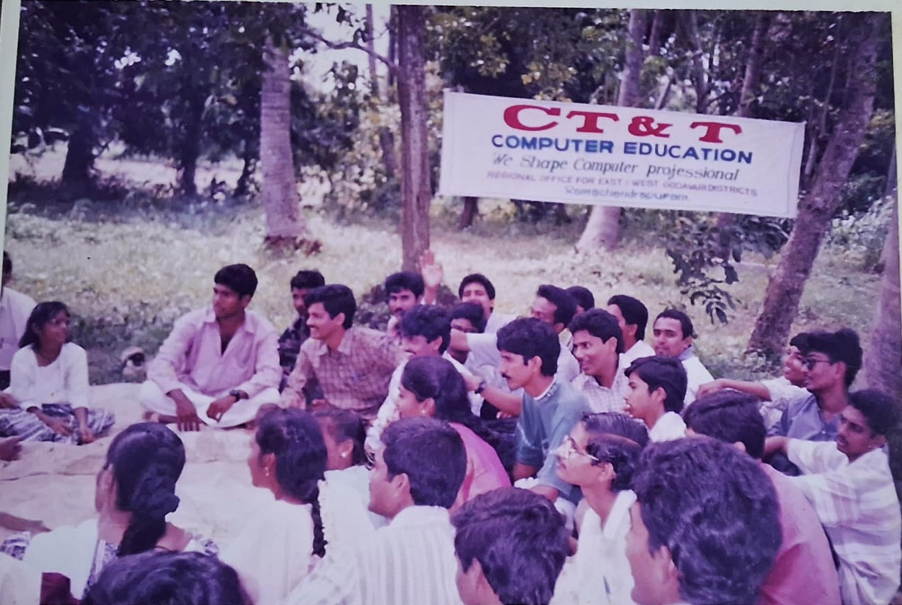
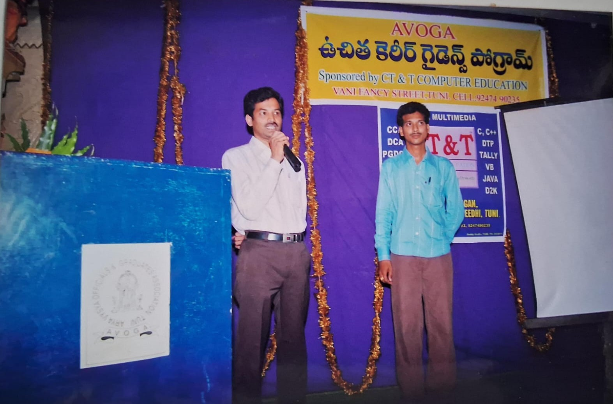
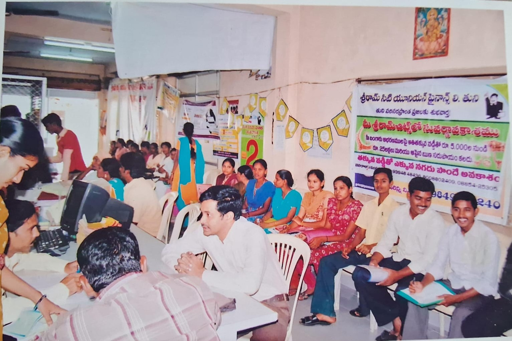
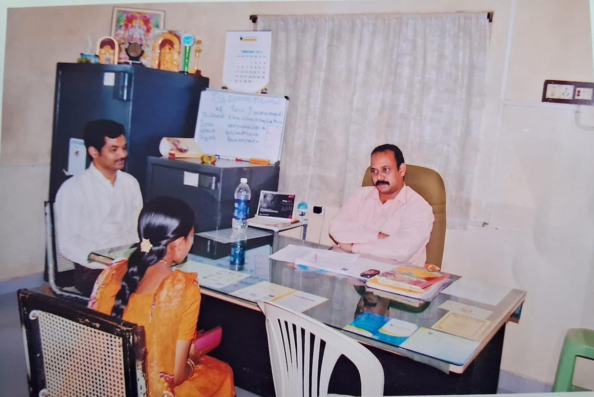
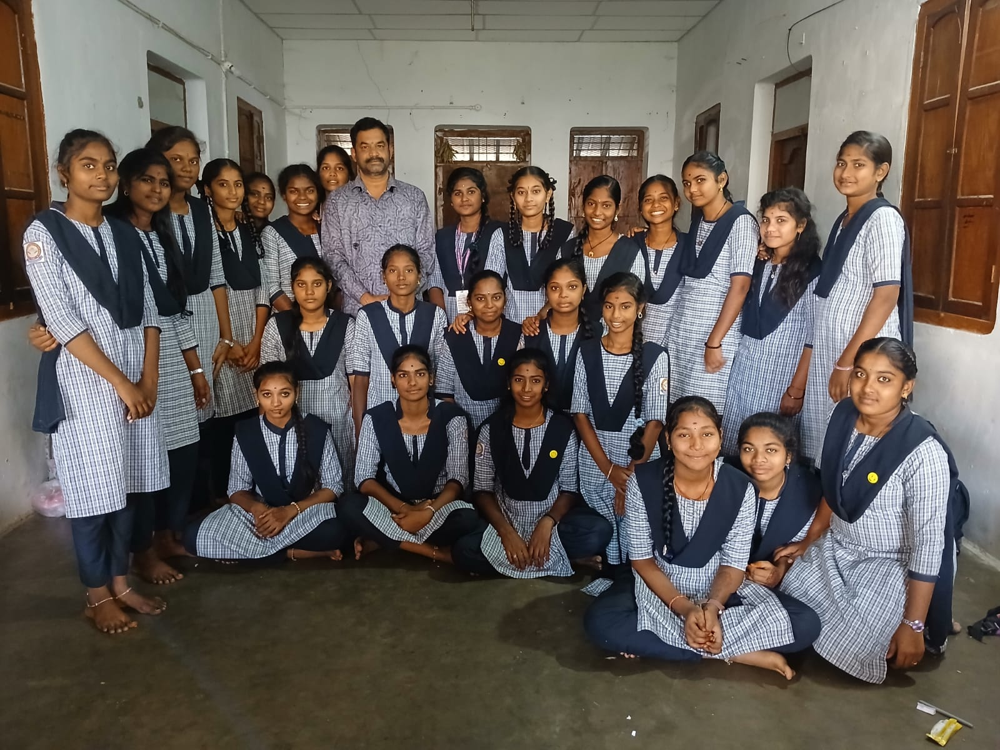

Empowering Students with Computer Skills Since 2001
CT & T Computer Education has been a trusted computer training institute since 2001, helping students develop practical digital skills.
Our goal is to provide industry-relevant training with experienced faculty and hands-on learning.
Since its founding in 2001, CT & T Computer Education has been dedicated to empowering students with practical computer knowledge and career-focused training.
Over the past 25 years, we have successfully trained thousands of students, helping them build careers in technology, business, and digital skills.
🎉 25 Years of Learning • Innovation • Student Success 🎉
Explore Our CoursesCT & T Computer Education was established with the vision of empowering students with practical computer skills and helping them build successful careers.
For more than two decades we have focused on delivering quality education, hands-on training and personalized guidance for every student.

The 2001 batch of CT&T Computer Education holds a special place as the very first group of students. This image captures a proud moment as they gathered to celebrate receiving their course completion certificates. It reflects their hard work and marks the strong foundation of CT&T’s journey in shaping students’ futures.

This image captures a joyful CT&T students’ excursion, filled with laughter, bonding, and unforgettable moments. Beyond academics, it reflects the spirit of friendship and shared experiences that make the learning journey truly special.

CT&T Computer Education proudly sponsored a Career Guidance Program for AVOGA, bringing together experienced professionals, reputed college lecturers, and inspiring personalities. The session provided valuable insights into career paths, higher education opportunities, and future planning, helping students gain clarity and confidence in their goals

In 2014, CT&T Computer Education organized a Job Mela at Sri Ram Chit Funds, Tuni, creating opportunities for students to begin their careers. Selected students participated in the recruitment drive, and four of them successfully secured jobs, marking a proud achievement for the institute.

This image captures the interview sessions conducted during the Job Mela at Sri Ram Chit Funds, Tuni. Students actively participated in face-to-face interactions with recruiters, showcasing their skills and confidence. It reflects a crucial step where preparation met opportunity, giving students real-time exposure to the professional hiring process.

In 2026, CT&T Computer Education conducted OJT (On-the-Job Training) classes for students of the Government Junior College Girls Campus in Tuni, offering practical, skill-based learning beyond textbooks. These sessions focused on real-world computer applications, helping students build confidence, improve technical skills, and prepare for future careers.
CT & T Computer Education founded.
Expanded course programs.
Started outreach programs to prepare government college students for future careers.
Successfully trained more than 3000+ students.
Founder achieved 30+ years milestone in teaching.
Celebrating Silver Jubilee of CT & T Computer Education.